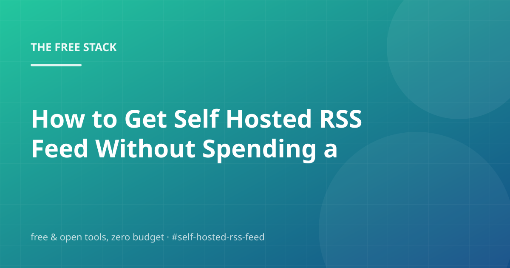

How to Get Self Hosted RSS Feed Without Spending a Dollar

Let's be honest: the internet is full of posts that pretend self hosted rss feed is complicated. It isn't. What's actually complicated is separating the free options that hold up from the free options that quietly become $20/month. That's what this post digs into.
We'll walk through RSS Feeds, Freshrss, Miniflux, and Choose boring technology first — and finish with the questions people actually ask, so you can check before you buy anything. You shouldn't have to buy anything.
RSS Feeds
First, the thing that actually matters: RSS is the only social channel that is free by definition: it is a file on your own host that readers pull.
Concretely: No account, no algorithm, no API change cycle. Every serious reader tool — Feedly's free tier, FreshRSS, Miniflux, NetNewsWire — speaks the same 2001 standard. For an autonomous blog, the feed is both the distribution channel and the canonical record of what was published.
No signup wall, no credit card — just a README and some patience.
Freshrss
First, the thing that actually matters: FreshRSS is a self-hosted RSS reader written in PHP — the classic free way to own your feed reading.
Concretely: Install it on any PHP host or in a container, add your feeds (this blog's feed.xml included), and you have a reader with no ads, no trial, and no account. Full-text mode, tags and sharing make it a daily driver, not a toy.
The links in the sources section go straight to the primary docs.
- Run the Docker image or clone the repo onto a PHP host
- Complete the web installer and add feed URLs
- Read, tag and archive at your own pace
Miniflux
Skip the fluff and start here: Miniflux is a minimalist, high-performance self-hosted RSS reader in a single Go binary.
The upshot: One static binary and a database — SQLite works for one reader. It is fast, stable, and its whole feature set fits on a screen. For an automation-focused blog owner, it pairs naturally: the blog publishes to feed.xml, Miniflux reads it.
If you only do one thing today, make it this one.
Choose boring technology first
The foundation looks like this: The best infrastructure for a side project is the least surprising kind: static files, a public repo, a free CDN in front of it.
The upshot: Every exotic dependency is a future tax. If a free, open-source tool can serve the job, pick the one with the longest track record and the biggest community, and save the interesting experiments for the parts users actually touch.
The links in the sources section go straight to the primary docs.
Frequently asked questions
Is self hosted rss feed actually free?
Mostly, yes. FreshRSS is a self-hosted RSS reader written in PHP — the classic free way to own your feed reading. Keyless public endpoints can get throttled if you hammer them, so batch your requests and cache what you fetch.
What would you do first if you only had one free afternoon?
Mostly, yes. RSS is the only social channel that is free by definition: it is a file on your own host that readers pull. The catch is usually scale or politeness: rate limits, bandwidth caps, or the fine print of the free tier.
Can I keep this free forever, or is it a trial?
Mostly, yes. RSS is the only social channel that is free by definition: it is a file on your own host that readers pull. The catch is usually scale or politeness: rate limits, bandwidth caps, or the fine print of the free tier.